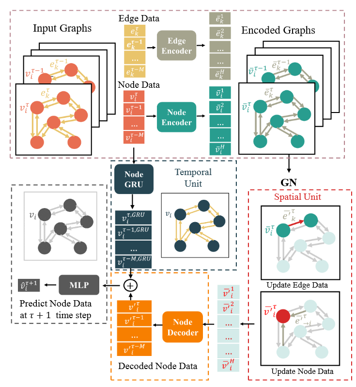
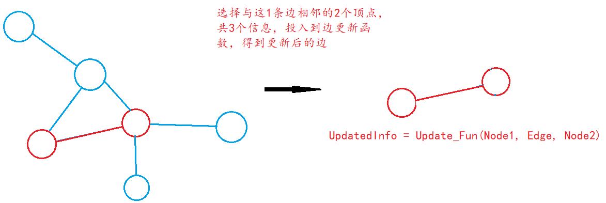
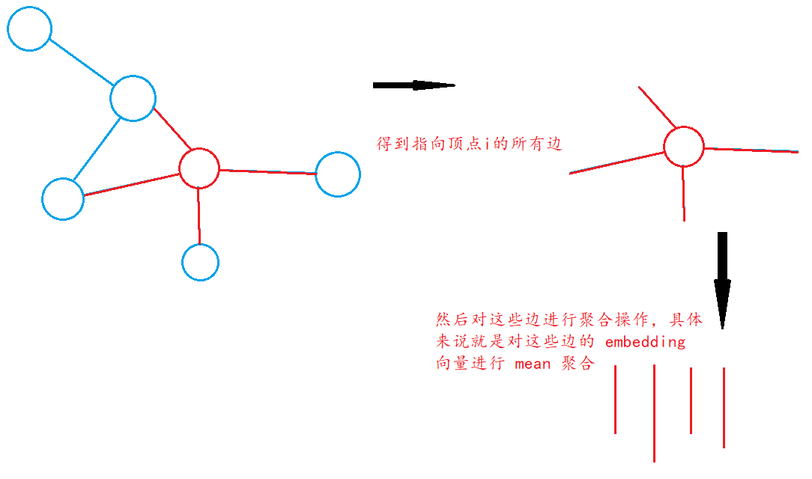
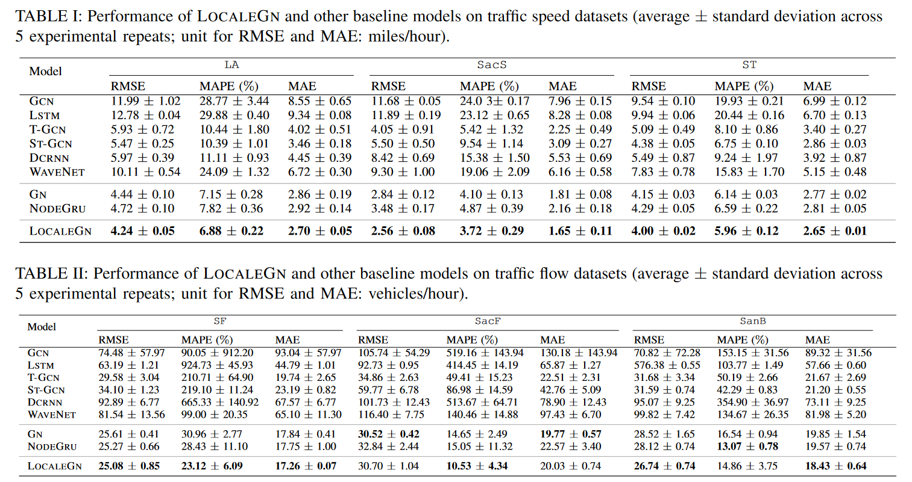
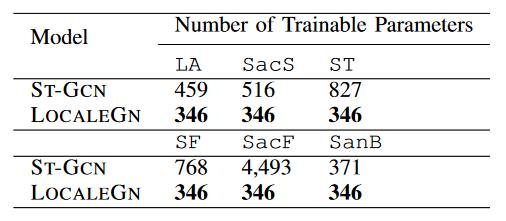
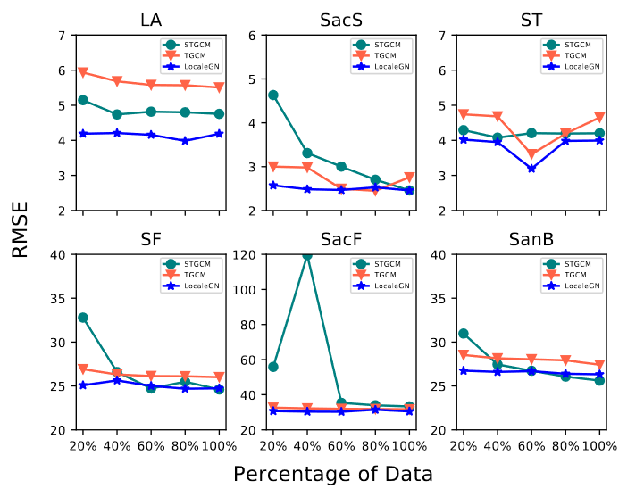
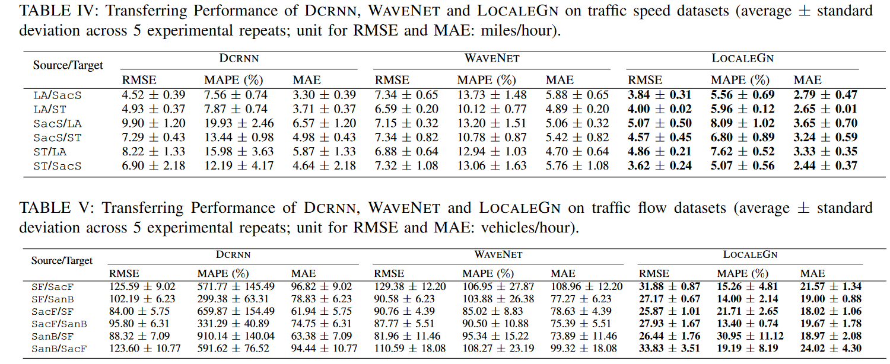

Few-Shot Traffic Prediction with Graph Networks using Locale as Relational Inductive Biases
Few-Shot Traffic Prediction with Graph Networks using Locale as Relational Inductive Biases
精准短期交通预测在智能移动运营管理系统发挥着重要作用。当前最先进的预测模型都是基于 GNN 的，这需要训练样本呢和网络模型的大小成正比。在大多数城市，由于数据收集的耗费，可用的交通数据远远低于所需的最低要求。开发一个交通预测模型使其能在大规模的网络上能应用小数据的交通数据仍然是一个问题。
我们发现一个节点最近未来的交通状态只与它的邻居节点的交通状态有关，所以这可以用图关系归纳偏差来表示。鉴于此，作者开发了一个基于图网络的深度学习模型 LocaleGN，该模型使用局部数据聚合、更新函数以及 RNN 来描述交通动态。
LocaleGN 是一个轻量级的模型设计被用来训练只有少量数据的情况，并且还不会过拟合，因此它可以解决数据量小的交通预测问题。通过六个不同的数据集对该模型进行了交通速度和流量预测，实验结果表明，LocaleGN 的性能优于现有的基准模型。并且，从 LocaleGN 学到的东西还可以应用到其他城市。
这篇研究可以帮助开发轻量级交通预测系统，尤其是那些缺少历史交通数据的城市。
背景
few-shot 交通预测目标：使用少量的历史交通数据进行训练，并在大规模网络上生成准确的短期交通预测。
1、存在的问题：大规模复杂的预测模型容易在有限的数据集上过拟合
- 某一节点的交通状态只与它的邻节点有关
- 从而定义目标节点区域的概念
- 目标节点相邻节点上的信息集合，这些信息包括但不限于交通状态（例如，速度、流量、OD）、静态数据（例如，道路类型、速度限制）和辅助信息
- 节点区域可以被视为预测模型的关系归纳偏差
- 可以通过 GN 来捕捉目标节点的动态和局部流量的状态，因为GN在建模关系感应偏差方面表现出巨大潜力，并已被广泛用于描述不同实体之间的局部关系
2、方法：
- 通过拓展 GN 模型去学习交通状态的局部空间和时间模型，以生成预测
- GN 分别应用于每个节点，并且可以应用于具有各种拓扑的不同节点
- GN 轻量级，具有少量可训练参数，因此在训练样本有限的情况下易于训练。
3、主要贡献：
- 提出了 few-shot 的交通预测任务，并且指出使用每个节点的本地化信息的重要性，并以此来解决数据集数量少的问题
- 开发了 LocaleGN 网络来解决 few-shot 交通预测问题，其中空间模式由带有归纳偏差 GN 来构建，时间模式由循环神经网络来构建
- 在三个真实的交通速度、流量数据集上分别进行了实验。结构展示了 LocaleGN 在 few-shot 预测任务上有最好的性能，并且从 LocaleGN 中学习到的知识还可以应用到其他城市。
符号定义
图：
节点：，其中 表示节点的数量
边：，其中 表示边的数量
节点和边之间的连通性表示图上的关系归纳偏差。
假设一组时间间隔表示为 ，每一个时间间隔为
在这个时间的图被定义为 ，其中顶点 ，顶点
更进一步的定义：
，
，
按理来说还会包括一些额外的属性，包括天气、道路信息等。但为不失一般性，作者假设每个节点的数据已经包括含有这些信息，边数据已包含道路相关属性。
算法详解
思路
我们可以把交通预测模型视为一个函数 ，它接受一个图 作为参数，返回下一个时间步的顶点信息 ，只要给出足够的时间间隔 ，就可以通过训练让模型不断去拟合这个函数。
在 few-shot 交通预测任务中， 通常比较小，比如说 ，但是所训练出来的 还是很容易过拟合，因此作者设计出了一个函数 ，其中 表示在节点 在时刻 的的本地信息。可以用 来表示处于节点 的 范围内的所有 和 。
如果我们能获取到这个函数 ，那么可训练的数据就变成了 ，这样就能解决 few-shot 的问题。
模型结构
LocaleGN 主要由 4 个部分组成：
- Edge and Node encoder：边编码器和节点编码器
- NodeGRN：节点门控循环单元
- GN：图网络
- Node decoder：节点解码器
模型流程简介：
模型将分别学习数据的空间模式和时间模式，其中 NodeGRN 用来学习节点的时间模式，而 GN 就用来学习空间模式。为了更精准的学习到以上这两种模式，通过使用 Edge 和 Node 的编码器对边 和节点信息 进行编码，将它们转化为更加语义化的形式 。
GN 是网络的重点，它会同时使用编码后的边信息 和节点信息 来学习数据的局部空间模式。在学习的过程中边信息会被聚合到节点信息中，最终 GN 会输出所学习到的节点信息
最后经过 GN 学习的 将会与 NodeGRU 所学习出来的 进行拼接，然后传递到 MLP 中，得到最终的预测结果
组件详解
NodeGRU
NodeGRU 用来捕获每个节点的时间模式，每个节点的时间模式会嵌入到 NodeGRU 中，并会被用来预测下一个时间步的节点信息。NodeGRU 会应用每个节点，所以网络的参数量只与网络大小有关，而与节点数量无量。
Encoder
为了更好的学习节点和边的潜在表示信息，作者使用 Node 和 Edge 编码器对节点和边信息进行编码，作者选用两个 MLP 分别作为边和节点的编码器。
这些学习到的潜在表示信息将会帮助 GN 更好的挖掘数据的时空关系。
Graph Network
图网络是 LocaleGN 最重要的组件，它通过节点和边上的更新和聚合操作来实现图的演变更新
1、边更新
每条边都有起点和终点，我们将起点数据、终点数据、边数据进行合并，然后投入到边更新 函数中，就可以得到更新后的边，如下所示：

作者使用多层感知机 作为边更新函数
2、边聚合
聚合函数 将会被应用于所有指向节点 的边，用符号表示这些边，如下：

因为每个顶点会有数量不同的边指向它，所以我们使用 mean 作为聚合函数，总体过程表示如下：
3、点更新
点更新函数会应用于图中所有的点。我们使用上一步聚合操作所得到指向顶点 的边 和顶点 作为输入，然后将它们投入到点更新函数 中，就可以得到最终的输出，如下：
其中我们使用多层感知机模型 作为点更新函数
Decoder
经过上一步的 GN 网络，我们得到了输出 。因为在最开始时，我们是使用编码器将点和边数据进行编码，然后再投入到 GN 中的，因此后面我们也要使用解码器，将 GN 的输出还原回之前的空间。
解码器和编码器一样，都是使用的多层感知机模型，如下：
输出层
最终会从 NodeGRU 和 Decoder 中得到时间模式信息和空间模式信息，我们对这两个信息进行 “concatenate” 操作，然后再投入到一个多层感知机预测器中，得到模型最终的预测结果。
最后预测的结果会与真实值计算 L2 损失，然后反向传播，更新网络参数。
GN 层数确定
LocaleGN 中的 GN 能描述每个节点的交通状态，通过堆叠 GN 网络 层，可以模拟出本地的 跳流量交换。因此 GN 层数的选择也是比较重要的。
源节点的影响可以在5分钟内扩散到与其直接相连的邻居。由于需要更长的时间来进一步传播影响，因此设置一个较小的 K 值就行了。（原论文也没有过多解释）
实验
数据集
监测点相当于节点数量
- 交通速度数据（speed）：
- LA：207个检测点，7天
- ST：228个检测点，1个月
- PEMSD7：228个检测点，1个月，来自 Sacramento 的数据，后面称其为 SacS
- 交通流量数据（flow）：
- PEMS04：307个监测点，2018年 9.1~11.7，来自 San Francisco Bay 的数据，后称其为 SF
- PEMS07：883个监测点，2018年 1.1~8.7，来自 Sacramento 的数据，后称其为 SacF
- PEMS08：170个监测点，2016年 7.1~8.7，来自 San Bernardino 的数据，后称其为 SanB
实验设置
训练资料分配，训练集 : 验证集 : 测试集 = 6 : 1 : 1
为了模拟训练样本的有限，所以只随机选取训练样本中 20% 的数据用于训练。训练时，还要对两个节点之间的距离进行归一化，因为来自不同数据的节点距离会各不相同。
模型进行单步预测，使用过去 12 个时间步的数据预测下 1 个时间步的数据，一个时间步 5 分钟，所以就是利用过去一个小时的数据预测未来 5 分钟后的数据。
实验结果
由表 1 和表 2 可以得知 LocaleGN 在只有少量训练数据的情况下，有非常好的效果。1）因为 GCN 和 LSTM 不能同时捕获数据的时间和空间信息，所以效果相对来说最差。2）而利用了时空信息的 T-GCN 和 ST-GCN 效果相对 LocaleGN 还是有所不如。3）对于参数共享模型中的 DCRNN 和 WAVENET 与 LocaleGN 相比也是有不少差距，主要因为它们的编码器和解码器设计比较复杂，参数较多，在 few-shot 任务中容易过拟合。

模型参数
由下图可以观察到，对于不同的数据集，LocaleGN 网络的参数量保持不变，而 ST-GCN 网络的参数量与数据节点的数量呈正相关，节点越多，参数量越大，尤其是 SacF 数据集，因为包含 883 个节点信息，所以参数量暴增。
而参数量的增多，很容易导致在少量数据集的情况下过拟合。

敏感分析
通过将投入训练的样本数量从 20% 到 100% 之间进行调整，能发现 LocaleGN 的表现十分稳定，而其他模型如 STGCN 会因为数据量减少，如减少到 40%，从而导致过拟合致使准确率急速下降。
所以这也体现了 LocaleGN 能更好的捕获数据的时空模式。

跨城市迁移
选择两个城市，对于其中一个城市使用它的历史交通、速度数据，并只随机采样 20% 的数据对其进行训练，然后将训练得到的模型应用到另一个城市数据。能发现 LocaleGN 拥有最好的效果，这也表明 LocaleGN 能更好的提取数据中共同的交通模式和物理规则。

复现实验
本次实验使用的是交通流量数据集 PEMS04 和 PEMS08，并且在原论文基础之上还添加了多步预测的实验。
为保持与原论文基本一致，实验将训练集、验证集和测试集的划为6:1:1，为了模拟训练数据有限的情况，同样只选择训练集中 20% 的数据进行训练。并使用近 1 小时内的数据来预测未来 5 分钟后或未来 1 小时的数据。原论文没有使用批量训练，而是使用 3000 个迭代进行训练。本实验使用批量数 16，2 个 epoch 进行单步预测训练，
单步预测
原论文的预测层使用的是 MLP，为了兼容后面的多步预测，所以在这里我们使用了 Conv 和 MLP 两种不同的预测器进行实验。
通过观察能发现 LocaleGN 在少量训练数据的情况下单步预测的效果确实非常好，而其他模型由于数据量过少，容易过拟合，所预测的数据确实不是特别理想。
学生自己复现的 LocaleGN 在 PEMS04 数据集与原作者的结果有一点差距，但是在 PEMS08 数据集上的结果更好。通过实验数据也能发现使用 Conv 和 MLP 作为预测器的差距不大。
多步预测
原论文只考虑了单步预测，没有考虑多步预测，为了更好的评测 LocaleGN 的能力，因此学生也尝试了 LocaleGN 多部预测的结果。
因为本论文的主题是 few-shot 精确预测，所以首先还是随机选择训练集 20% 的数据进行训练。通过观察表2能发现在少量数据的情况下 LocaleGN 的多步预测有点惨不忍睹，差距与其他模型项目有点大。而且训练在第 10 个 epoch 时模型的提升就几乎停滞了。
为了更进一步的测试，我不再模拟数据集过少的训练，而是使用训练集 100% 的数据进行训练。
观察表3，很遗憾的发现即使使用更多的数据，LocaleGN 的多步预测表现得还是很普通。但是观察它预测的短期数据表现得还是可以。这也表明了 LocaleGN 主要解决得是短期预测，对于长期预测还是有所欠缺，当然这与我自己得水平应该也有关系。
迁移测试
下面就来测试模型的可迁移能力，我将使用由 PEMS08 数据集所训练出来的模型来预测 PEMS04 的数据，然后再反过来测试。能发现 LocaleGN 的迁移能力非常强，这可能要归功于 GN 组件模块，因为它们很好的总结出数据的物理规律。
总结
本文最大的创新就是在 GN 的基础上引入了 NodeGRU，LocaleGN 中的 GN 模块其实使用的是 Differentiable Physics-informed Graph Networks 文中的 DPGN，这也解释了为什么 LocaleGN 能够由很好的泛化迁移能力，因为 DPGN 能够很好的总结数据的现实物理规律。
而通过 NodeGRU 对节点编码使得模型具有丰富的时间信息，使其能够很好的进行短期预测。其次 NodeGRU 统一为所有的节点进行编码，而不是为每个节点分配一个 NodeGRU 进行编码，这使得网络参数只与 NodeGRU 网络的大小有关，而不与数据量的大小有关，通过这点使得 LocaleGN 具有解决 few-shot 预测问题的能力，这点在3.1节算法思路也提到过。总之，结合 GN 和 NodeGRU 能使 LocaleGN 在 few-shot 任务中有着非常好单步预测能力。
改进
LocaleGN 在 GN 的基础上添加了 NodeGRU 使得模型在解决 few-shot 问题上的能力非常出色，因此我准备将预测层从原文的 MLP 给替换成 NodeGRU 看看是否能有进一步的提升。本次实验同样使用过去 1 小时预测未来 5 分钟后的数据，批量数 16 ，2 个 epoch ，随机选取训练集 20% 的数据进行训练。
通过观察数据发现，使用了 GRU 的预测器在某些数据集上有所改进，但是有的数据集上改进不明显。综合来说使用 GRU 进行预测输出还是有一定的帮助。